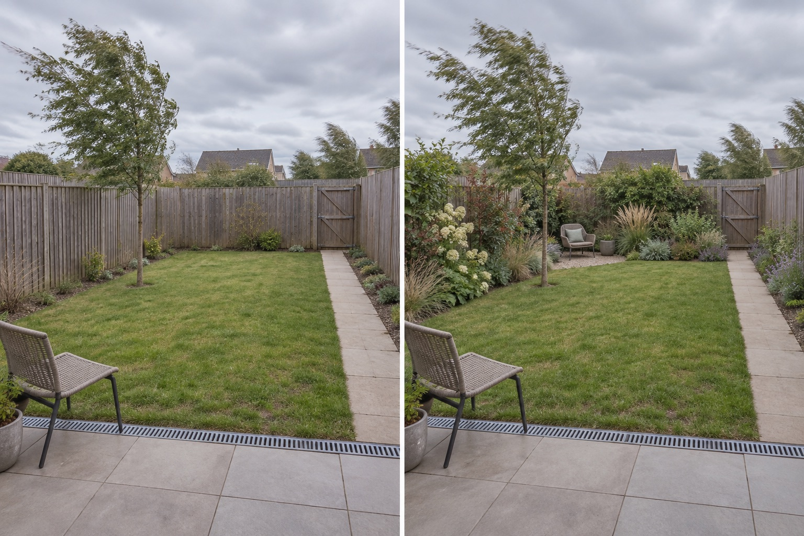

Map entry and turbulence
Record which edge receives the strongest wind and where walls, gaps or corners appear to accelerate or swirl it across several days.
A useful windy-garden layout begins with repeated observation: where wind enters, how boundaries and buildings redirect it, and which existing corner already feels calmer. Test a layered, semi-permeable shelter zone around one small pause while keeping the gate, drain and maintenance route open.
Editorially reviewed September 9, 2026.
This AI-generated comparison is visual inspiration, not a wind assessment, structural calculation, planting prescription, product specification, safety review, cost estimate, local approval or performance guarantee.

Record which edge receives the strongest wind and where walls, gaps or corners appear to accelerate or swirl it across several days.
Test staggered planting with visible gaps instead of assuming that one solid visual barrier will create comfortable shelter.
Move a lightweight chair to candidate positions before adding anything permanent, while preserving the direct route to the gate.
The Royal Horticultural Society describes windbreaks as semi-permeable barriers and says an exposed site should be assessed for the type, position and dimensions of shelter required. University of Minnesota Extension identifies height, density and length as major windbreak design elements. Those sources support observing and planning; this image cannot calculate wind behavior, structural loads or suitable species for your property.
The patio, channel drain, direct path, gate, timber boundaries, existing tree, lawn, ground level, neighboring context and camera position remain unchanged. The concept does not assume permission to attach a screen, alter a fence or disturb established roots.
Observe several weather events and seasons. Note wind direction, gusts, calmer pockets, damaged plants and loose objects rather than inferring exposure from one photograph.
Inspect fences, walls, gates, tree roots, utilities and neighboring ownership. Confirm permissions before attaching, replacing or loading any boundary.
Check species, mature size, anchorage, salt exposure, soil moisture, toxicity, invasiveness and maintenance with authoritative local sources.
Retain the gate route, drain inspection, pruning space and a safe place to secure or store lightweight furniture during severe weather.
Avoid copying a windbreak from another climate, assuming taller is always better, blocking the only maintenance route, hiding a drain, crowding an existing tree or relying on loose containers and lightweight screens where gusts could move them.
Stop before installing a solid screen, fence, footing, pergola, large tree, overhead element or anchored product. Seek appropriate local advice if wind damage is recurring, a boundary is shared, utilities or protected trees are involved, or the proposal needs structural, planning or safety verification.
Do not assume so. Authoritative guidance commonly treats windbreaks as semi-permeable, but the right density, height, length and position depend on actual exposure and the site.
Test movable seating in existing calmer pockets and behind a proposed layered shelter zone. Keep the exit, gate, drain and main route clear.
The answer depends on climate, salt exposure, soil, moisture and the exact species. Use local horticultural guidance; the AI image does not identify or recommend plants.
No. It can help compare visible layout ideas, but it cannot model local topography, gusts, turbulence or structural loads.
Upload a level, wide photo to compare layered concepts while retaining the real route, drain, gate and boundaries.
AI-generated visualizations are concepts. Verify exposure, materials, planting, safety and permissions before physical work.